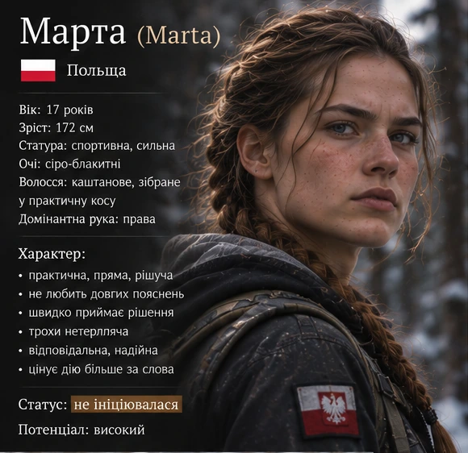

PROFILE
Practicality and resolve
Marta is a student from Poland. She is practical, direct and decisive, dislikes lengthy explanations and makes quick decisions. She takes responsibility seriously and can be relied upon. To her, concrete actions matter more than words.
Origin: Poland
Age: 17 (according to the supplied visual reference)
Height: 172 cm (according to the supplied visual reference)
Build: Athletic and strong
Eyes: Grey-blue
Hair: Chestnut, tied in a practical braid
Dominant hand: Right
Status: Not initiated (according to the supplied visual reference)
Potential: High (according to the supplied visual reference)
PERSONALITY
Direct and dependable
Marta is not inclined to waste words or give lengthy explanations. She assesses a situation quickly and acts. She can be somewhat impatient, but she is responsible and reliable, showing her position primarily through what she does.
VISUAL APPEARANCE
Practical layered clothing for training, travel and field conditions. Distinctive details include a braid, silver earrings, an amulet bearing Poland's white eagle, a Polish coat-of-arms patch and training gloves.
REFERENCE NOTE
Age, height, appearance, status and potential are taken from the supplied visual reference. No specific abilities or training level are stated here, to avoid adding unsupported details.